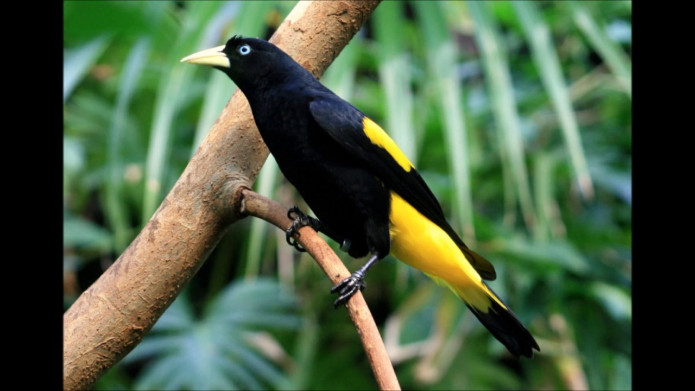
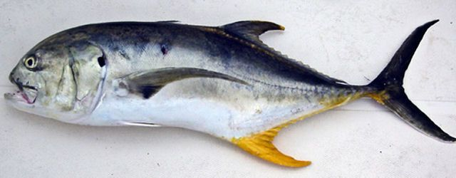

Xexéu
Cacicus cela
| Reino: | Animalia |
| Classe: | Aves |
Espécie muito conhecida no Norte e Centro-oeste do País. Conhecido também como
japiim, japiim-xexéu, japim, japuíra,
joão-conguinho, xexéu-de-bananeira (Nordeste) e
xexéu.
O macho mede de 27 a 29,5 cm de comprimento e a fêmea de 22 a 25 cm, pesa de 60 a 98
g. O imaturo é de cor de fuligem em vez de negra. As fêmeas são bem menores que os machos. O canto é tão
variado que as vezes causa a impressão de um coro de vários exemplares. É comum os indivíduos imitarem
perfeitamente aves (ex.: tucano, papagaio) e mamíferos (ex.: ariranha).
Onívoro, alimenta-se principalmente de frutos e sementes. Ocasionalmente saqueia
ninhos de outras aves. Tem predileção pelas mangas (Mangifera indica), frequentando com assiduidade e em
grandes grupos os mangueirais urbanos.
Xaréu
Caranx hippos
| Reino: | Animalia |
| Classe: | Actinopterygii |
Caranx hippos é uma espécie de peixe pertencente à família
Carangidae.
A autoridade científica da espécie é Linnaeus, tendo sido descrita no ano de
1766.
Habita a porção ocidental do Oceano Atlântico e do Pacífico oriental. Tais peixes
são alvo da pesca esportiva e chegam a medir até 1,50 m de comprimento, possuindo o dorso verde-azulado,
flancos e ventre prateados ou amarelados e mancha negra no opérculo e nas nadadeiras peitorais.
São conhecidos popularmente por aracaroba, aracimbora, cabeçudo, carimbamba,
corimbamba, guaracimbora, guiará, papa-terra, xarelete, xaréu-branco, xaréu-roncador, xaréu-vaqueiro, xarém
e xexém.